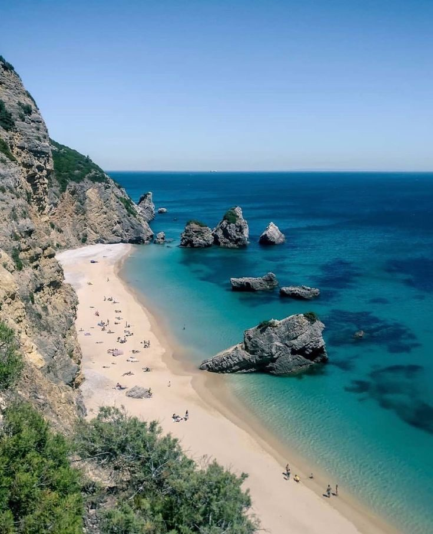

There's a particular kind of disorientation that doesn't show up on any map. You're not lost in any obvious way. Life looks fine from the outside — perhaps even good. And yet something in you knows it: this isn't quite the direction I meant to be going.
Inner cartography is a practice born from that feeling. It is, at its simplest, the art of mapping your inner landscape — your desires, your fears, your edges, the places in you that have been left unexplored for too long.
The word cartography comes from the Latin carta — map — and graphia — writing. The cartographers of the 15th and 16th centuries didn't just chart coastlines. They were making sense of the unknown, turning the formless into something that could be held, read, navigated. Inner cartography asks us to do the same for the territory within.
What does an inner cartography session actually look like?
It is not therapy, though it can be therapeutic. It is not journaling, though writing is part of it. It is not meditation, though it asks for a quality of stillness.
An inner cartography session is a guided process of inquiry — structured enough to take you somewhere, open enough that where you arrive is genuinely yours. It usually combines:
- Guided reflection questions — not the easy ones
- Slow, intentional writing — without editing or performance
- Somatic awareness — listening to where in the body something is held
- Silence — because some things only come when we stop filling the space
The questions at the centre of inner cartography tend to be deceptively simple. What do I truly want? What am I carrying that isn't mine? What would I do if I already trusted myself? These are not questions to answer quickly. They are questions to sit with, walk with, sleep on.

The Serra da Arrábida — where inner and outer landscapes mirror each other.
Why nature makes it deeper
There is a reason inner cartography works best outside. Not because nature is decorative backdrop — but because the natural world has a way of loosening the grip of our habitual thinking.
When you walk among ancient Mediterranean scrubland, when you hear the sea below the limestone cliffs, when you smell herbs that have grown in the same soil for centuries — something in you relaxes. The nervous system quiets. The part of you that is always managing, performing, planning, steps back.
And in that space, things surface. Feelings you've been too busy to feel. Desires you've been too afraid to name. A direction that was there all along, waiting for you to be still enough to notice it.
This is why at Retirarsi, inner cartography sessions don't happen in a seminar room. They happen in the rhythm of four days — mornings with Pilates to ground the body, afternoons with herbalism to connect to the land, and in between, the space to go inward.
Who is it for?
Inner cartography is for anyone standing at a threshold — not necessarily a dramatic one. It's for the person who has achieved what they set out to achieve and feels strangely empty. For the one whose life is full but who can't shake the sense that something essential is missing. For those in a transition — a career shift, a relationship change, a decade turning — who want to move forward with intention rather than default.
It is not for those seeking to be told what to do. A map is a tool for the person who holds it. Inner cartography hands you the pen.
What you might find
People are sometimes surprised by what emerges in an inner cartography session. Not always the grand revelation — more often, a quiet recognition. A permission. A sense of: I already knew this. I just needed to stop long enough to hear it.
Some arrive looking for clarity about work, and find something about relationship. Some come carrying grief they hadn't named. Some discover that what they thought was a life problem is actually a body problem — something held in the shoulders, the chest, the throat — that only needed attention and space to release.
None of this is accidental. The body keeps the map, too. Inner cartography reads it.
How to begin
You can begin anywhere. With a question. With a notebook. With a walk without your phone. But if you want to go deeper — if you want four days in a beautiful place, with a structure that holds you while you explore — our Inner Compass retreat was designed exactly for this.
Pilates to bring you into your body. Herbalism to connect you to the land. Inner cartography to help you read what's already there. And the Serra da Arrábida, which has a way of doing the rest.
Inner Compass
4 days in Arrábida Natural Park. Pilates, herbalism and inner cartography. Small group, maximum 12 people. 45 minutes from Lisbon.
Discover the Retreat